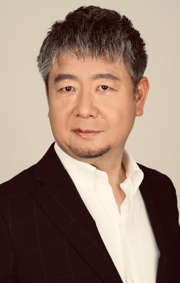

8.25（金）14：10～14：40
デジタルツインによる企業デジタルトランスフォーメーションと成熟度モデル
ユニティ・テクノロジーズ・ジャパン
執行役員 産業営業本部長
松本 靖麿 氏
デジタルトランスフォーメーションにおいて、デジタルツインを構築することは多くの企業において有効なアプローチとなります。多くの企業がデジタルツインに取り組んでいますが、ステップやレベルについては、明確化されていません。Unityでは、グローバルの経験とお客様からのフィードバックをベースに、デジタルツインの成熟度モデルを定義しています。本講演では、デジタルツインの成熟度モデルを使い、企業がとるべきアプローチについて、ご紹介いたします。